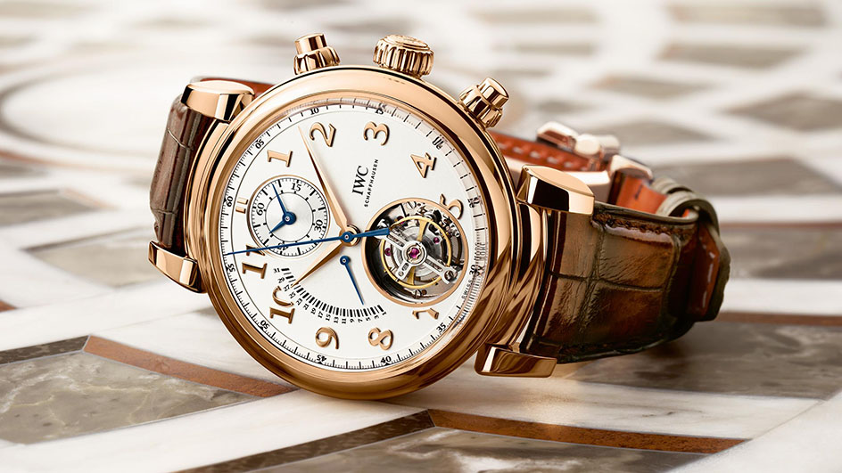

Het IWC Da Vinci- horloge werd voor het eerst aangeboden in 1985 . Het werd ontworpen door Hano Burtscher en vernoemd naar de plannen van Leonardo da Vinci uit 1499 voor de cirkelvormige versterking van de haven van Piombino .

- Specificaties
- Prijs: $3.917
- Opwinden: Handopwind
- Bouwjaar: 1997
- Referentienummer: 3570.50.00
- Hoogte: 13.8mm
- Waterdicht:5 ATM
- Glas: Kuntstof
- Diameter: 42mm